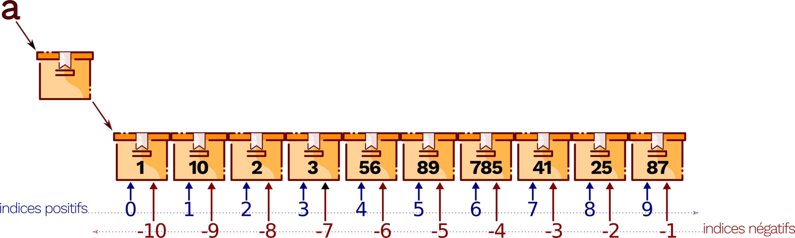

Les listes
Dans de nombreuses situations, on a besoin d’utiliser des valeurs qui, comme les textes, les images ou les sons, sont formées de plusieurs nombres ou de plusieurs booléens. Ces valeurs sont dites des données composites. . Sous python le nom de liste est utilisé.
Déclaration d’une liste
Sous Python, on peut définir une liste comme une collection d’éléments séparés par des virgules, l’ensemble étant enfermé dans des crochets.
Exemple
 Structure d'une liste
Structure d'une liste
>>> a=[1, 10, 2, 3, 56, 89, 785, 41, 25, 87]
>>> a
[1, 10, 2, 3, 56, 89, 785, 41, 25, 87]
La première instruction crée une variable a dont le contenu fait référence à une liste de 10 entiers.
Accès aux données d’une liste
Un des gros avantages d’une liste est que l’on peut appeler ses éléments par leur position. Ce numéro est appelé indice (ou index) de la liste.
On accède à une case d’une liste avec l’expression NomVariable[index]. nomVariable correspond au nom de la boîte, dont le contenu est la référence à la liste à n cases et index est une expression dont la valeur est un nombre entier compris entre 0 et n – 1.
Index d’une liste
La numérotation des indexs d’une liste de n éléments commence à partir de zéro et se termine à n-1. Mais la liste peut également être indexée avec des nombres négatifs. Les indices négatifs reviennent à compter à partir de la fin. Leur principal avantage estest de pouvoir accéder au dernier élément d’une liste à l’aide de l’indice -1 sans pour autant connaître la longueur de cette liste. L’avant dernier élément a lui l’indice -2, l’avant-avant dernier l’indice -3, etc.
 Indices d'un tableau
>>> a=[1,10,2,3,56,89,785,41,25,87]
>>> a[0]
1
>>> a[6]
785
>>> a[-1]
87
Les tranches (slicing)
Un autre avantage des listes est la possibilité de sélectionner une partie d’une liste en utilisant un indiçage construit sur le modèle [m : n+1] pour récupérer tous les éléments, du émième au énième (de l’élément m inclus à l’élément n+1 exclu). On dit alors qu’on récupère une tranche de la liste, par exemple :
>>> a=[1, 10, 2, 3, 56, 89, 785, 41, 25, 87]
>>> a[2:4]
[2, 3]
>>> a[:3]
[1, 10, 2]
>>> a[:-4]
[1, 10, 2, 3, 56, 89]
Opération sur les listes
Le balayage d’une liste
Le balyage d’une liste consiste à lire successivement l’ensemble des valeurs contenues dans une liste afin d’éventuellement opérer un traitement. Cette opération peut être réalisé avec une boucle for ayant la liste à balayer comme argument. Dans l’exemple suivant, la variable i prendra successivement les valeurs contenues dans le tableau. La boucle for sera donc exécutées 4 fois puisque la liste a contient 4 éléments.